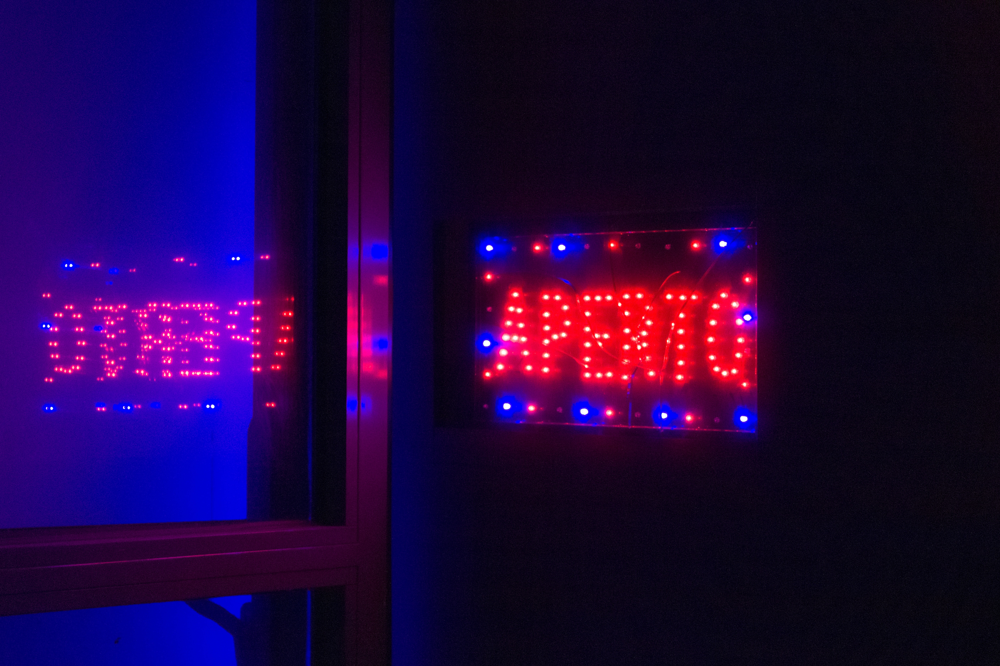

he page "LED Tolonogy" does not exist. You can ask for it to be created, but consider checking the search results below to see whether the topic is already covered. Topology In mathematics, topology (from the Greek words τόπος, 'place, location', and λόγος, 'study') is concerned with the properties of a geometric object that 36 KB (4,225 words) - 00:34, 26 February 2021
